VEX Competition Journey
Two seasons of VEX Robotics - from Nationals-winning Whisper to the powertrain-optimised Switch, plus a V5RC Middle School Nationals win.
VEX Robotics: Team 4613B (Barker College)
Name: Brandon Lai
Team: 4613B - Barker Redbacks
Robot: Whisper
Season: VEX HIGH STAKES (2023–2024)
Personal Motivation
Coming from VEX IQ, I wanted to take the next step into a more demanding robotics environment where I could apply what I had learned to larger, more complex systems. Joining VEX Robotics gave me the opportunity to move beyond building and programming within a simpler platform and start working with more advanced mechanical design, autonomous systems, CAD, and competition-driven engineering.
What interested me most was the iterative nature of competitive robotics. A design might work in testing but fail under match conditions, meaning every subsystem had to be designed, tested, measured, and refined. I wanted to understand not just how to build a robot, but how to engineer one that could perform reliably under pressure.
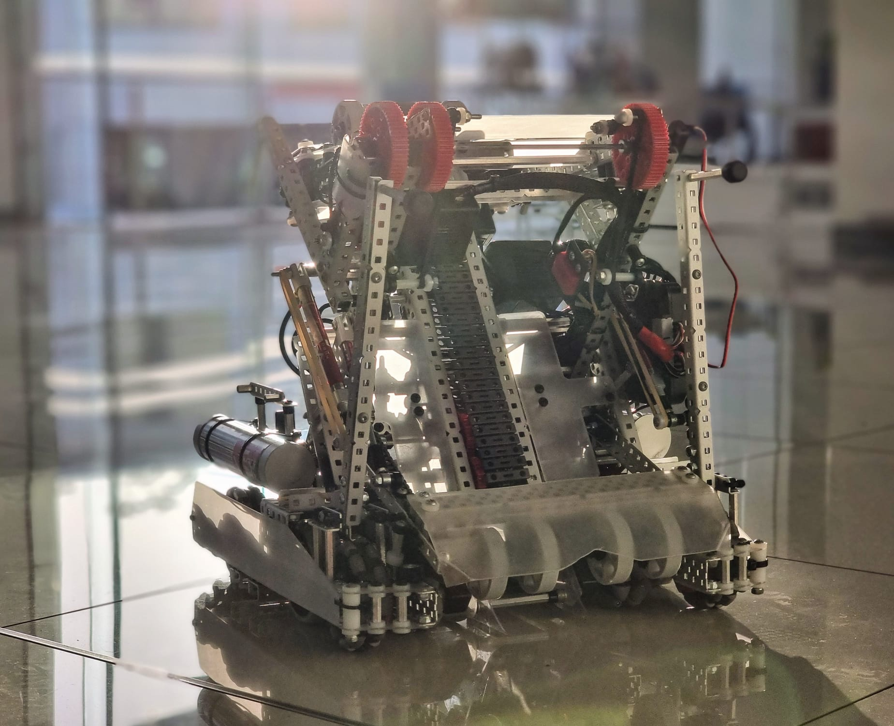
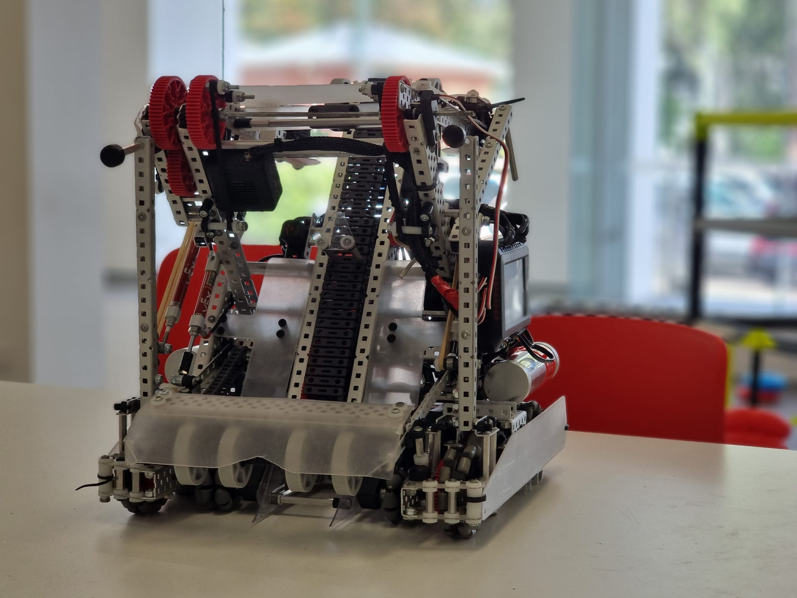
Contributions/Roles
- Team Captain
- Lead Designer
- Lead Programmer
Competition Results
- Australian Nationals - Winner
- VEX Worlds Alliance Captain - 13th in Division
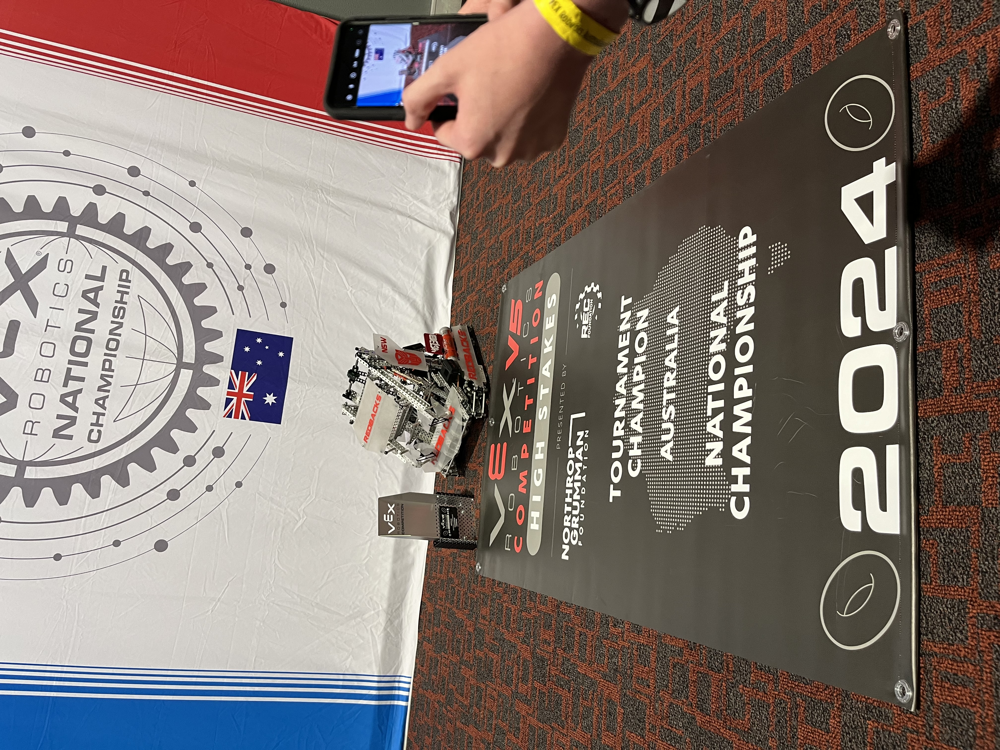
Engineering Documentation
The robot was developed through continuous design, testing, and iteration. The engineering notebook documents the design decisions, failed prototypes, testing results, CAD development, and reasoning behind the final systems.
The engineering notebook provides a more in-depth overview of the robot and the engineering process behind it.
2024 High Stakes Nationals Notebook.pdf
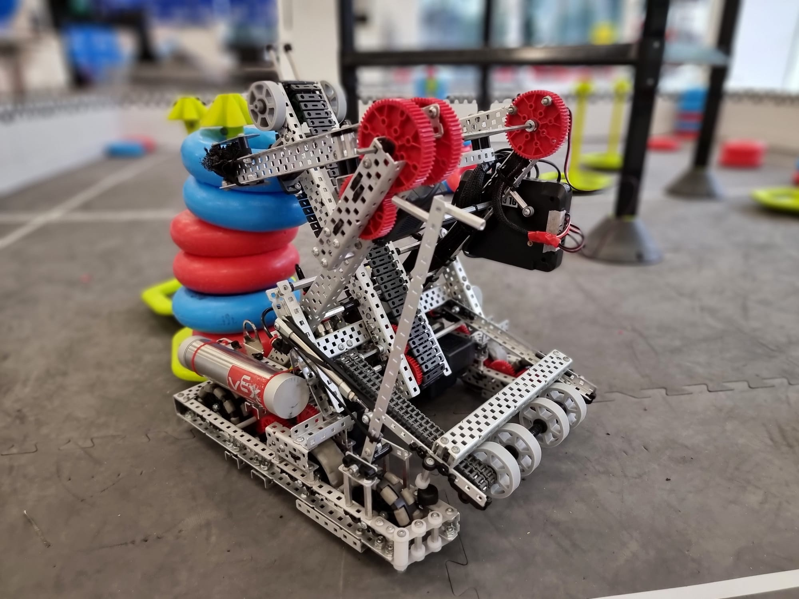
V5RC - Middle School
Barker Redbacks MS
As part of the same Barker Redbacks program, 4613B also competed in the V5RC Middle School division - moving from VEX IQ’s plastic platform onto full VEX V5 metal hardware.
Nationals
The team competed at Nationals, running pit setup, qualification matches, and autonomous routines with the V5 robot, and won the event.
V5RC - Middle School Worlds
Barker Redbacks MS
Following the Nationals win, the team advanced to the World Championship with the V5 robot.
My Role
- Team Captain
Contributions
- [Insert]
Event Results
| Statistic | Result |
|---|---|
| Qualification Rank | [Insert] |
| Qualification Record | [Insert] |
| Alliance | [Insert] |
| Alliance Selection | [Insert] |
| Result | [Insert] |
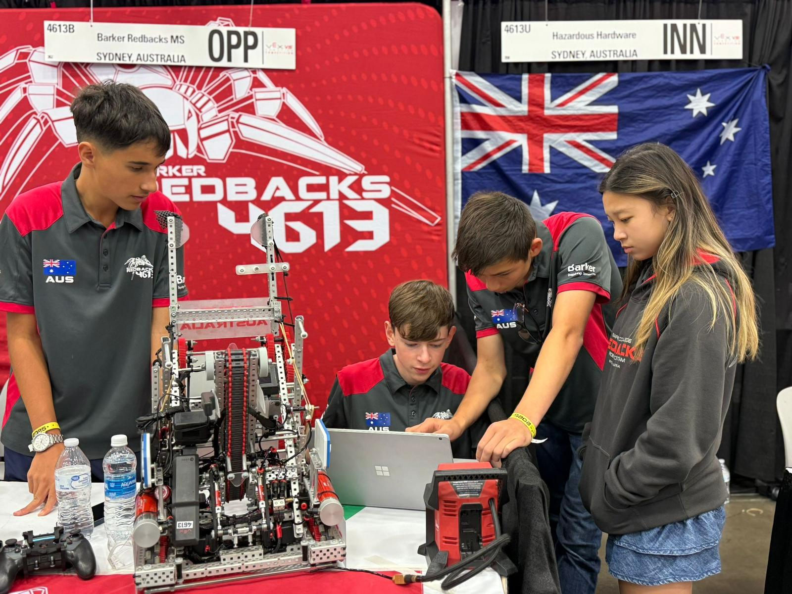
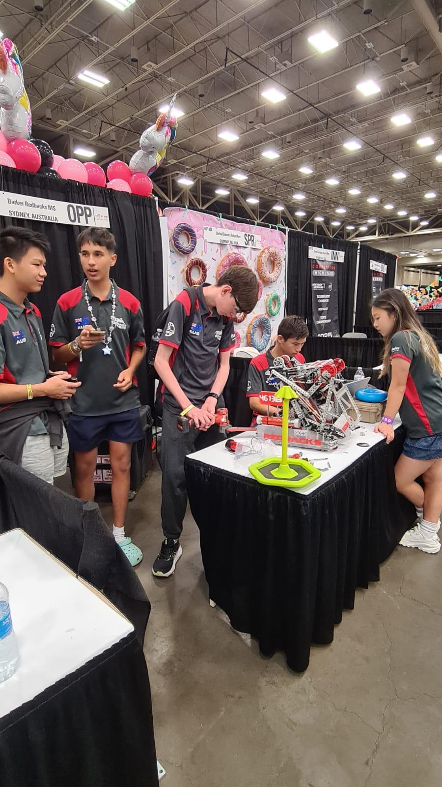
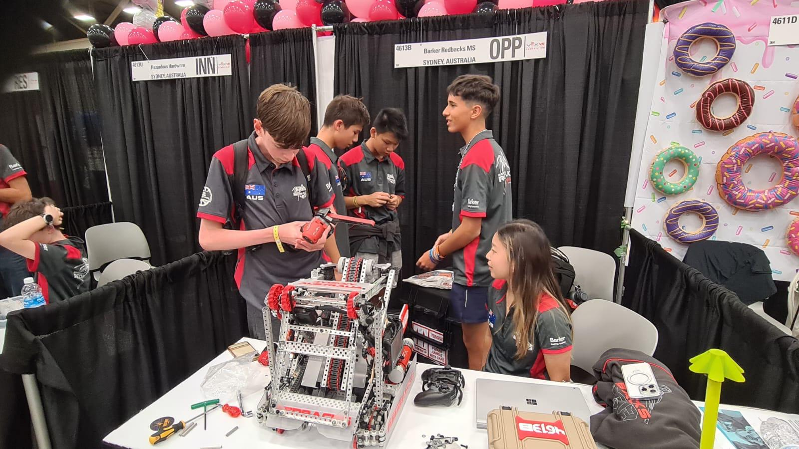
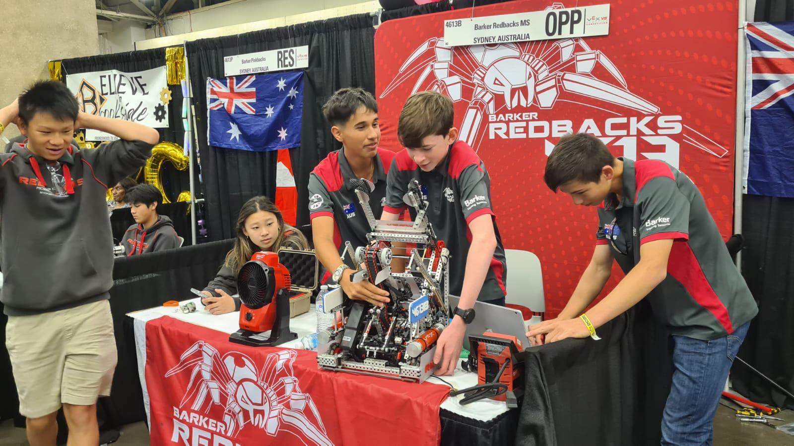
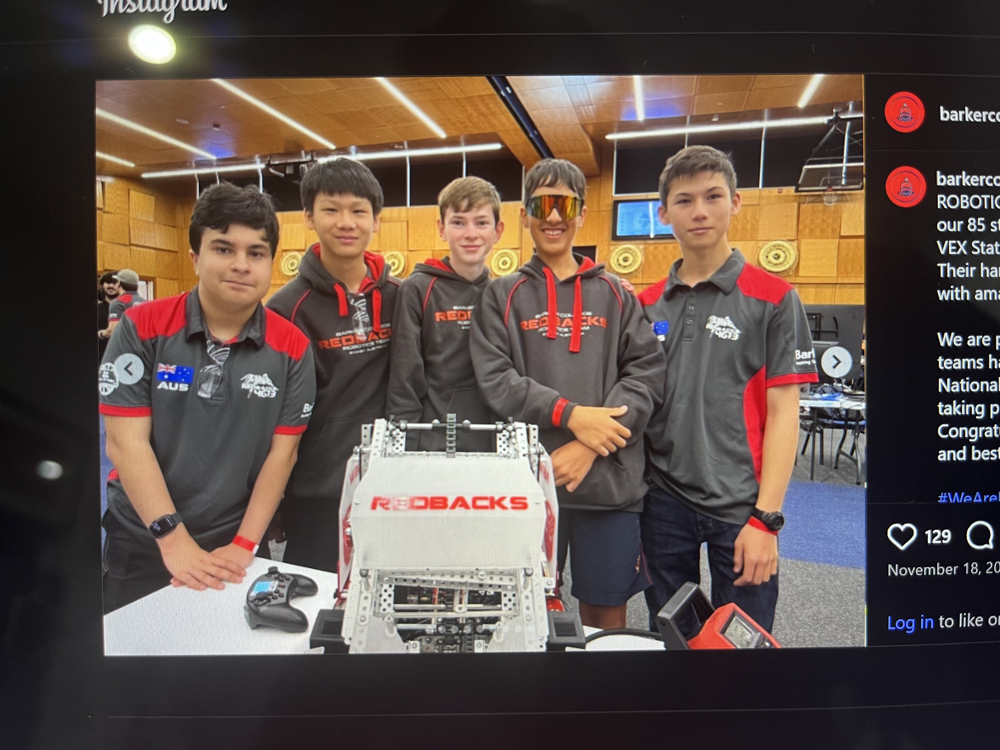
VEX Robotics Personal Portfolio: Team 4613O (Barker College)
Name: Brandon Lai
Team: 4613O (Barker College)
Robot: Switch
Season: VEX OVERRIDE (2025–2026)
Personal Motivation
Joining VEX Robotics Team 4613O was driven by a desire to take on complex mechanical and software challenges under tight, high-stakes constraints. Rather than focusing purely on theoretical engineering, I wanted to build a high-performance system from the ground up - one where every gram of structure, millisecond of cycle time, and line of code directly impacted our competition standing.
The 2025–2026 VEX OVERRIDE season brought strict power limits and restrictive possession rules, making it the ideal stage to test creative mechanical design, advanced software architectures, and rigorous testing methodologies. Beyond the tech, I wanted to experience true team iteration: pushing past initial design failures, refining solutions, and delivering a reliable machine under pressure.
Overview of Contributions
- Powertrain & Power Sharing: Engineered the robot’s custom 55W powertrain layout and developed a passive Dual Gravity Ratchet Transmission (PTO). This allowed us to dynamically route motor power between the intake and lift without the weight or complexity of active pneumatic shifters.
- Structural Engineering & CAD: Redesigned stock structural components into custom, weight-reduced L-profiles to lower total robot mass and lower the center of gravity while keeping high-impact stress points well below material yield thresholds.
- Autonomous & Control Systems: Built the full autonomous navigation pipeline from scratch. Integrated Adaptive Monte Carlo Localisation (AMCL) with an IMU, distance sensors, and dual-wheel odometry to eliminate drift and ensure precise, repeatable field trajectories.
- System Testing & Calibration: Led physical testing regimes to map pneumatic consumption curves, measure drivetrain friction, and tune closed-loop motor controllers for consistent execution across multi-match tournament days.
Key Achievements
- 55W Power Optimisation: Successfully bypassed strict motor limits through passive gravity ratchets, delivering maximum available torque to both the drive and the Double Reverse Four-Bar (DR4B) lift mechanism.
- High-Precision Autonomous Trajectories: Kept autonomous pose deviation under 1.4 inches across full-field routes using custom particle-filter sensor fusion.
- Pneumatic Efficiency: Achieved 24 full scoring cycles on a single air tank - exceeding match length demands by 20% while staying safely above the 35 PSI operating threshold.
- Rapid Field Traversal: Clocked a sub-2.3 second full-field traversal time, maximizing point output during critical scoring windows and driver-control endgames.
Override - Switch, the Robot
Team 4613P (Barker Redbacks) built Switch for V5RC Override as a ten-week RoboDev project, about 70 hours with four team members. I was team captain, lead designer, lead programmer and lead mechanical: I designed and manufactured the robot in CAD, wrote the driver and autonomous code, and built the lillet localisation and motion library.
Every decision followed the full design cycle: identify the problem, brainstorm, select with a decision matrix, build and program, test, then repeat. Tank drive beat H-drive, X-drive and mecanum, a hybrid pivoting-roller intake beat the single-roller options, and a double reverse four-bar (DR4B) won the lift.
The robot is a six-motor tank drive with a hybrid intake and transfer roller, a DR4B lift, a vertical-roller end effector, and a gravity ratchet that lets only two motors drive both the lift and the intake. The ratchet module bolts on with eight screws so it can be swapped quickly if it breaks. The 1 min 39 s robot reveal video shows it working on a full field.
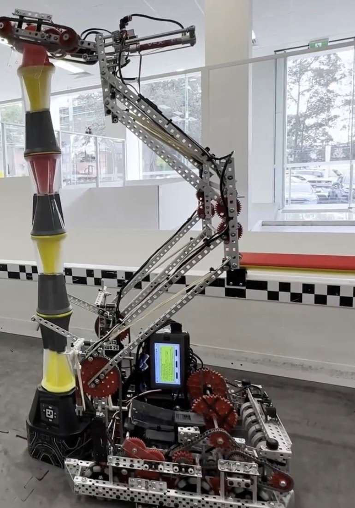
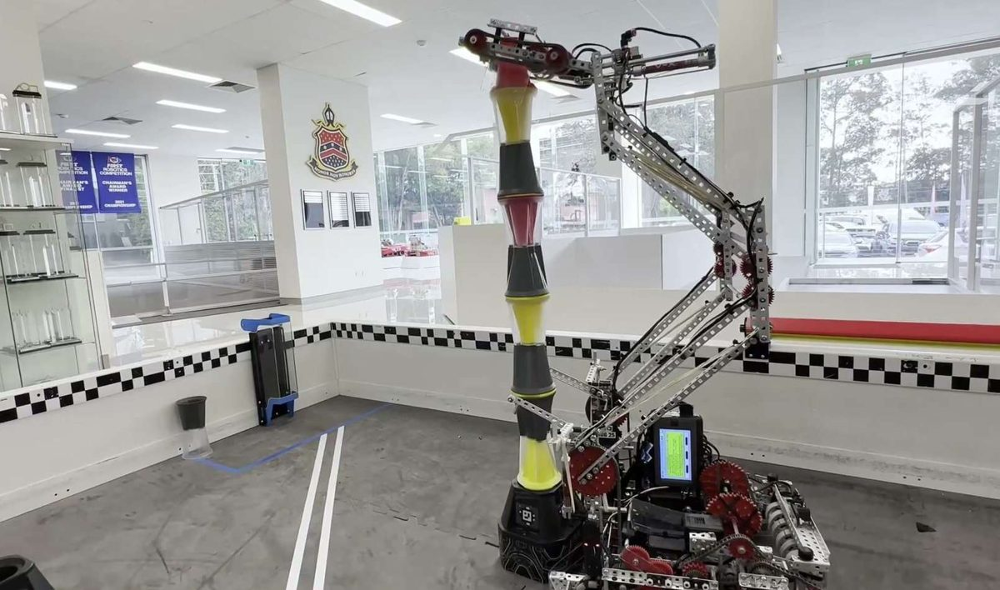
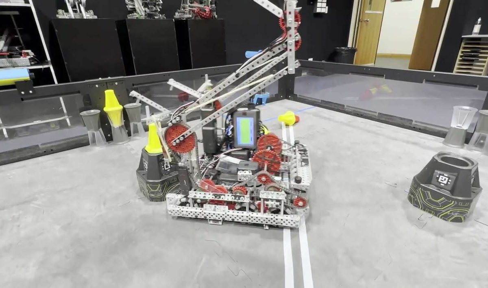
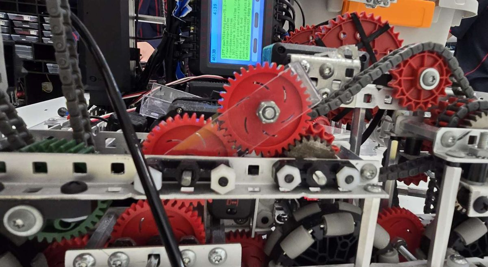
Override - Achievements
- Autonomous skills: a planned maximum of 103 points, and the robot hit it. Best run 103, mean of the last five runs 96, and 8 of 10 runs scored 83 or more. The routine was designed in my path-planning simulator and exported to the robot.
- Driving: after re-measuring the tracking wheel, straight-line drift fell from 2.3 in to 0.6 in over 96 in. A locked-sign turn profile removed the oscillation near 180 degrees, leaving 0.8 degrees of average turn error.
- Intake: pickups improved from 8/20 with a static roller, to 15/20 with a pivoting roller, to 19/20 pins and 18/20 cups once a kicker roller was added.
- Software: the lillet library (odometry, a 200-particle Monte Carlo localiser and a motion controller) passes 20 simulator tests with 0.22 in mean error in simulation.
- Team: four members with clear roles, a weekly programming journal, and testing logged against success criteria.
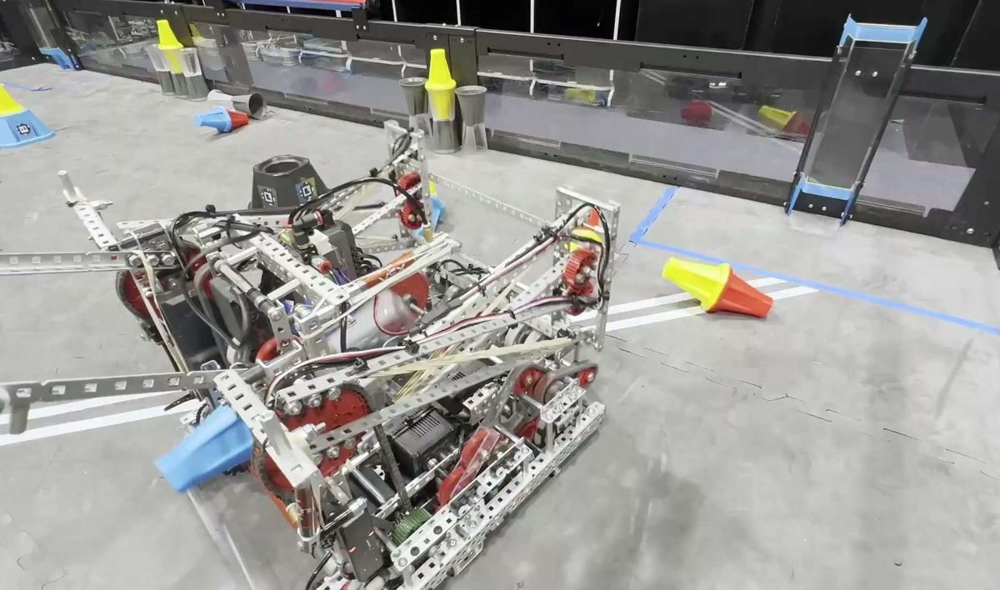
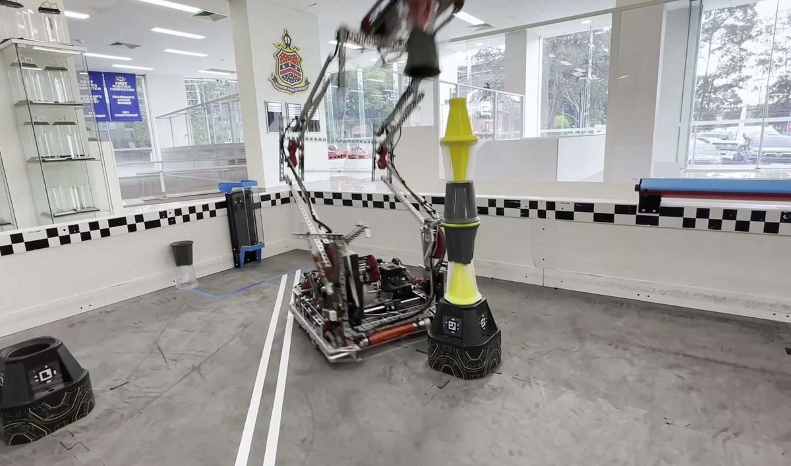
Override - Problems We Faced
- End effector. A piston claw was too big and needed the piece lined up by hand. A powered claw fitted but was still bulky. Both were rejected for the vertical-roller design, which pulls the piece in from both sides.
- Intake and transfer. Pieces dropped between the intake and the second roller, and the front roller and kicker ran at different surface speeds. Moving the end effector closer, running the kicker at about twice the intake speed, and adding a transfer stop raised aligned transfers from 16/20 to 19/20 and stopped the robot holding two pins (3/20 runs to 0/20).
- Lift load. The motors carried the whole DR4B and end effector, so rubber bands now help it up: 1.4 s floor to tall goal at 48 degrees C.
- Toggles. A piston and lever flips the side toggle. The back toggle is pushed over by a long standoff as the lift rises, with no extra motor or air.
- Still unsolved. Stacking a pin on a cup fails about one run in five, so the next step is a funnel on the end effector. The notebook's own code-status page also says the localiser is built and tested in simulation but not yet running in the robot's main program, so autonomous still relies on odometry.
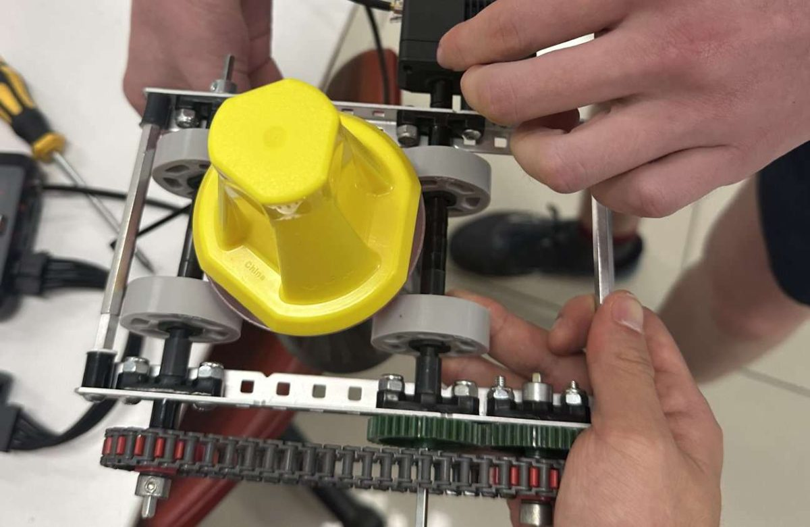
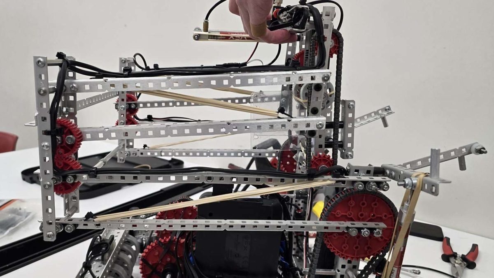
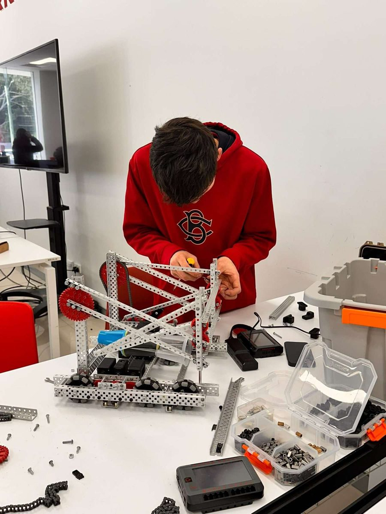
Override - The Code
The robot's code is described on the Redbacks Localization page. In short: LemLib PID driving, an LCD autonomous selector, and a DR4B controller with no PID because a correction would drop the arm through the ratchet. The claw controller stops its rollers when a piece jams.
If you want an in-depth overview of the robot and why we built it this way, you can look through our engineering notebook (PDF, 194 pages).
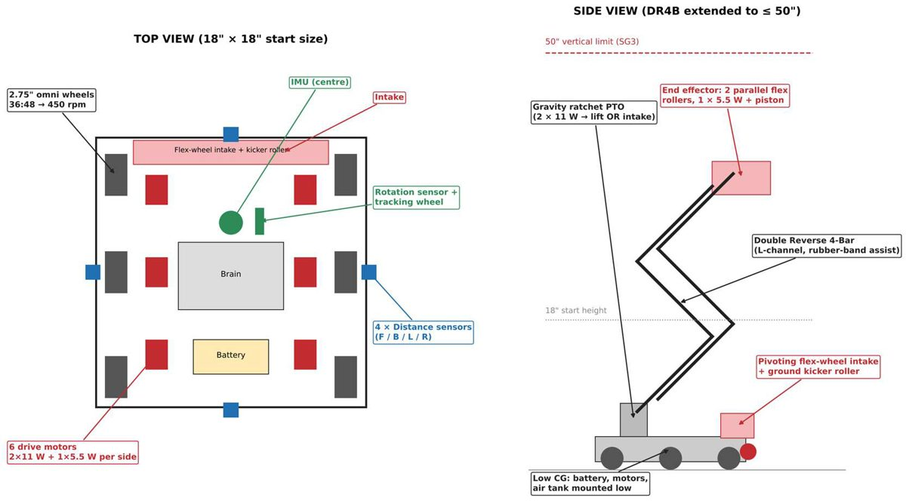